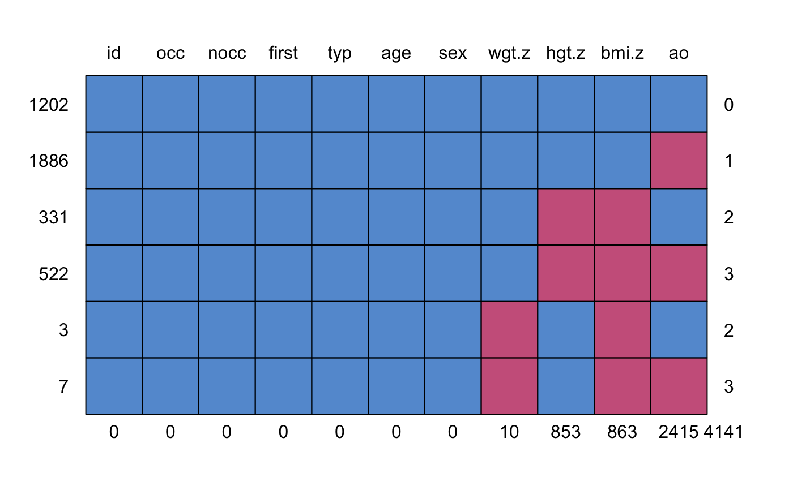

Data of subset of the Terneuzen Birth Cohort data on child growth.
tbs is a data frame with 3951 rows and 11 columns:
Person number
Occasion number
Number of occasions
Is this the first record for this person? (TRUE/FALSE)
Type of data (all observed)
Age (years)
Sex 1=M, 2=F
Height Z-score
Weight Z-score
BMI Z-score
Adult overweight (0=no, 1=yes)
tbc.target is a data frame with 2612 rows and 3 columns:
Person number
Adult overweight (0=no, 1=yes)
BMI Z-score as young adult (18-29 years)
De Kroon, M. L. A., Renders, C. M., Kuipers, E. C., van Wouwe, J. P., van Buuren, S., de Jonge, G. A., Hirasing, R. A. (2008). Identifying metabolic syndrome without blood tests in young adults - The Terneuzen birth cohort. European Journal of Public Health, 18(6), 656-660.
De Kroon, M. L. A., Renders, C. M., Van Wouwe, J. P., Van Buuren, S., Hirasing, R. A. (2010). The Terneuzen birth cohort: BMI changes between 2 and 6 years correlate strongest with adult overweight. PLoS ONE, 5(2), e9155.
De Kroon, M. L. A. (2011). The Terneuzen Birth Cohort. Detection and Prevention of Overweight and Cardiometabolic Risk from Infancy Onward. Dissertation, Vrije Universiteit, Amsterdam. http://dare.ubvu.vu.nl/handle/1871/23806
Van Buuren, S. (2018). Flexible Imputation of Missing Data. Second Edition. Chapman & Hall/CRC. Boca Raton, FL.
This tbc data set is a random subset of persons from a much larger
collection of data from the Terneuzen Birth Cohort. The total cohort
comprises of 2604 unique persons, whereas the subset in tbc covers 306
persons. The tbc.target is an auxiliary data set containing two
outcomes at adult age. For more details, see De Kroon et al (2008, 2010,
2011). The imputation methodology is explained in Chapter 9 of Van Buuren
(2012).
#> id occ nocc first typ age sex wgt.z hgt.z bmi.z ao #> 1202 1 1 1 1 1 1 1 1 1 1 1 0 #> 1886 1 1 1 1 1 1 1 1 1 1 0 1 #> 331 1 1 1 1 1 1 1 1 0 0 1 2 #> 522 1 1 1 1 1 1 1 1 0 0 0 3 #> 3 1 1 1 1 1 1 1 0 1 0 1 2 #> 7 1 1 1 1 1 1 1 0 1 0 0 3 #> 0 0 0 0 0 0 0 10 853 863 2415 4141